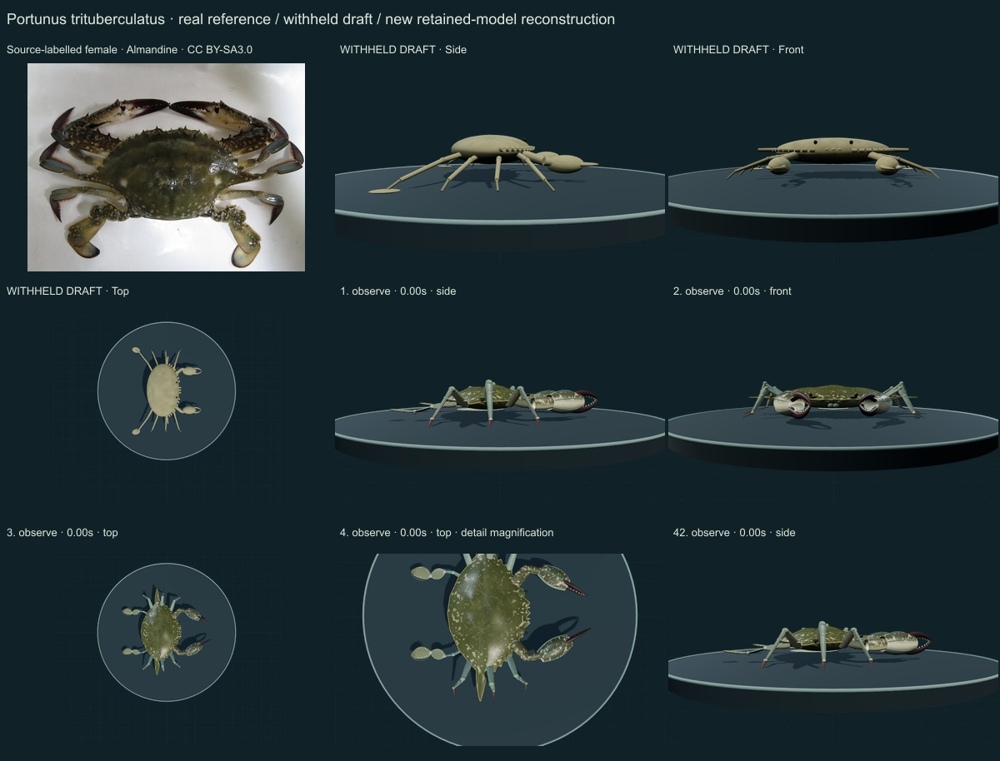
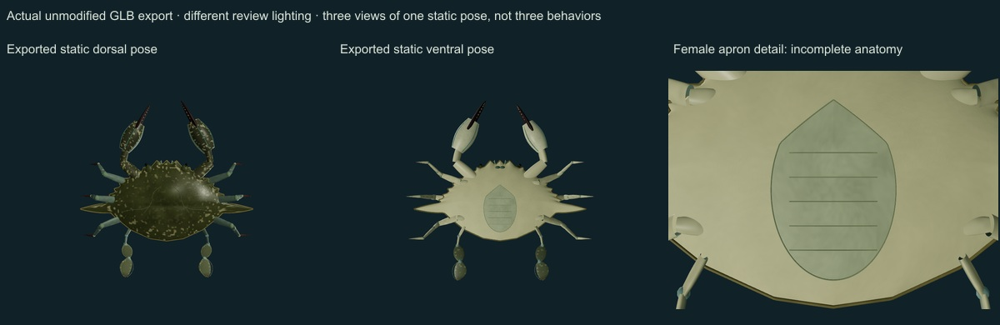
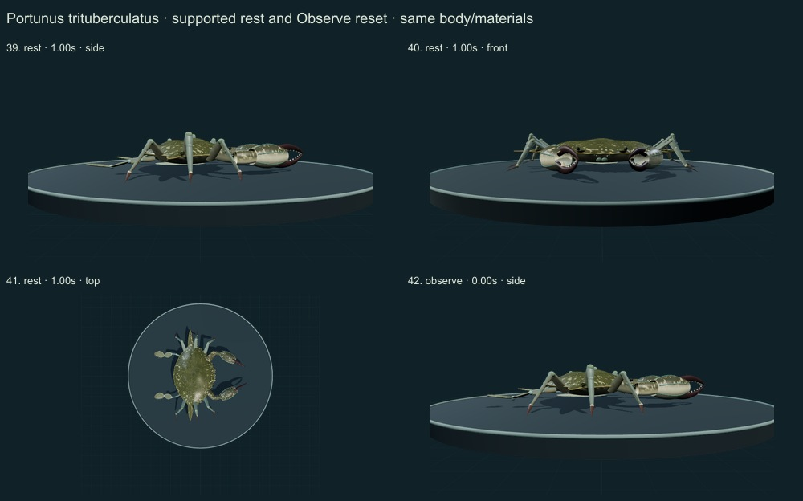
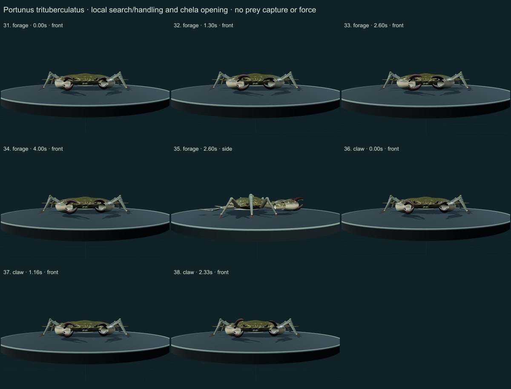
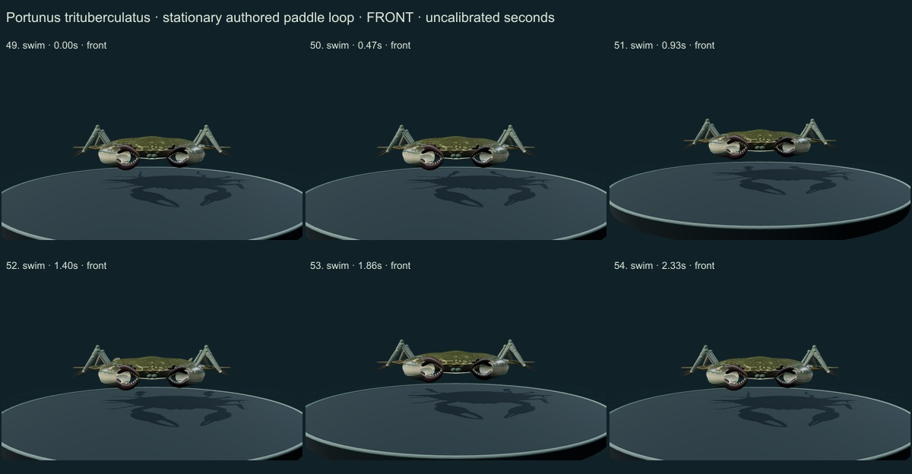
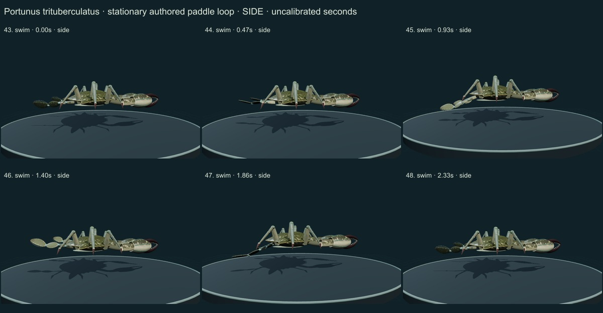
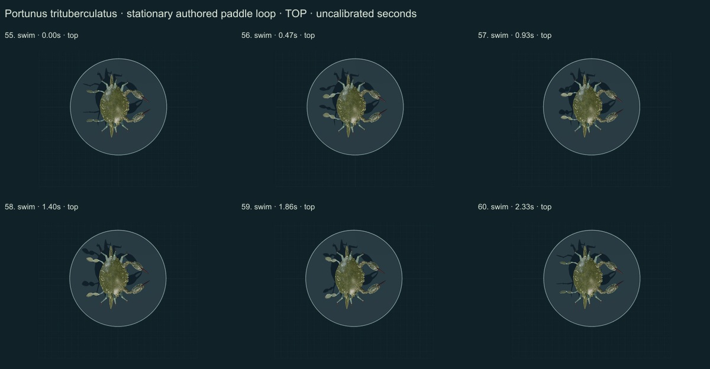
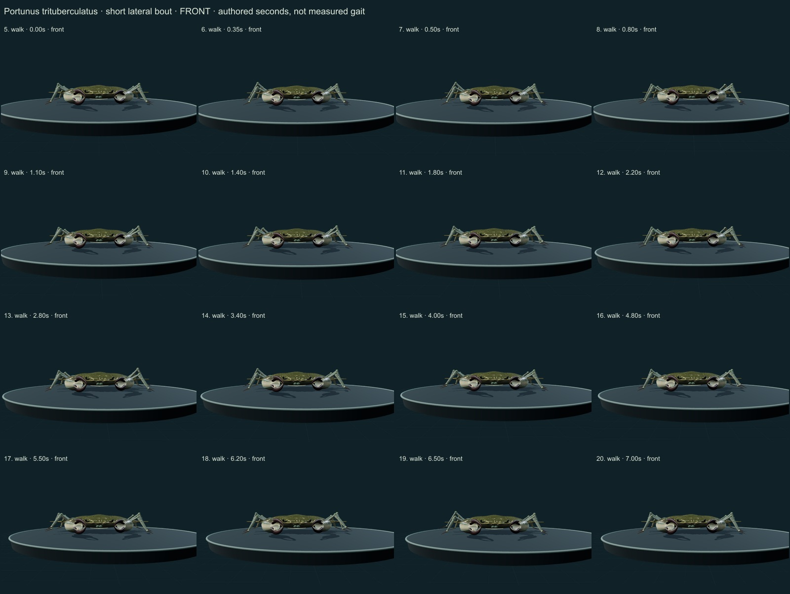
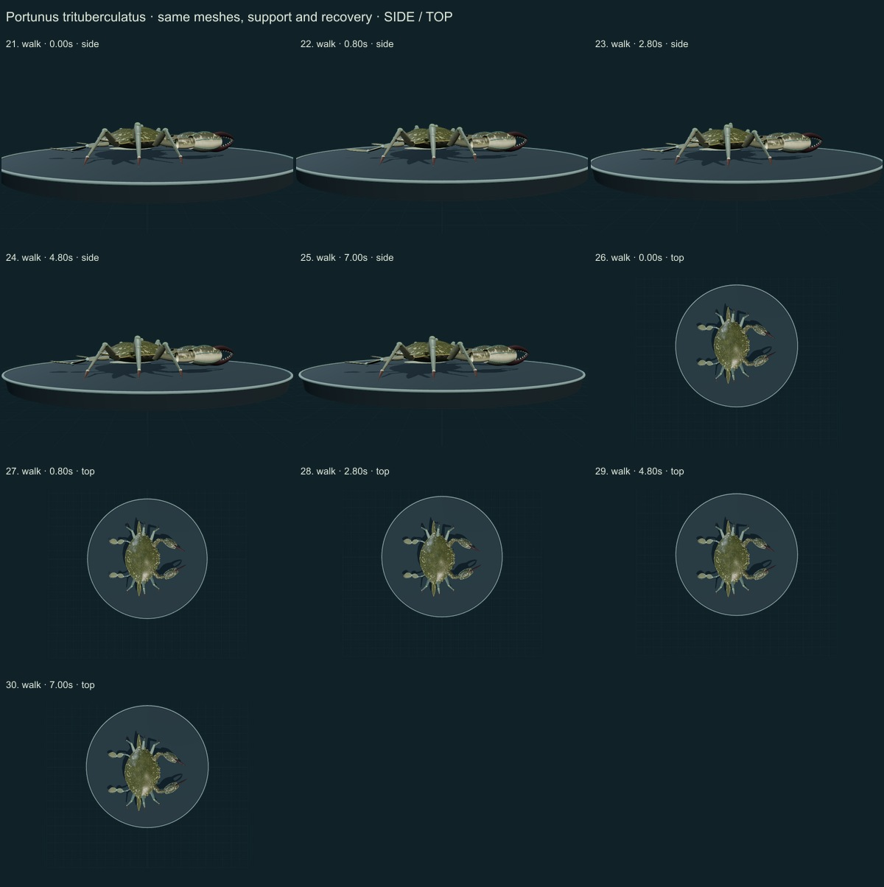

This release adds 1 species, reaching 254 / 550. Four of the fifty withheld drafts now have initial corrections; 46 remain withheld. 296 species remain to reach 550, including 250 without saved drafts. Previous blue-crab correction · Historical withheld-draft findings.
Qualitative author comparison of 60 actual final main-viewer WebGL2 states plus three views of one actual static GLB export on nine labelled sheets. Authentic Almandine source photograph and actually rendered selected FAO/Chen pages were compared. Existing 253 records are unchanged. No independent specialist assessment, measured accuracy percentage or physiological simulation.
Real reference: Commons user Almandine, CC BY-SA 3.0. The caption labels a female dorsal specimen; the current image is a 2014 replacement. Sex, preparation, maturity and identification are source-labelled. It was resized/JPEG encoded without generative alteration. It is not a calibrated live material or a specimen scan.
The previously failed NHM PDF link was replaced by a successful official FAO full-volume download. The actually viewed key on printed page 1119 shows three frontal teeth and four inner meral spines; printed page 1125 supplies the selected species diagnosis/illustration. The model follows that key. Naturalis retains different two-tooth/two-lobe wording, which remains an explicit source discrepancy. Generic female diagrams on page 1047 provide context for a simplified cover, without proving the photographed specimen’s ventral anatomy.
Selected biological sections and actual figures 1 and 4 of Chen et al.2022 guide the appendage/loop study. Its robot joint limits, calculated thrust and engineering validation are not animal measurements and have not been imported. The loop is authored, without a fitted raw trajectory or biological rate.
GBIF’s accepted species-level binomial was checked directly. The JAMSTEC form with a parenthesized subgenus is the same accession. “Horse crab” and “gazami crab” are common-name variants; no Smithsonian collection determination was used. Occurrence counts are recorded observations, not native-range or abundance estimates.
Before: Generic smooth beige oval, weak frontal region, thin rod-like limbs, two simple paddle tips and small local chela control.
Changed: A distinct broad roughened shell with regional eminence/ridge cues, nine marginal teeth on each side and long last spines, plus three frontal teeth using the selected FAO key. Thicker mottled chelipeds have four inner meral spine cues, inner/outer carpal cues, ridged cream/olive palms, dark curved fingers and a larger-chela basal conical-tooth cue. Six pointed walking legs differ from the expanded articulated P5 pair; paddle bases were filled to improve joint continuity.
Still approximate: Unmeasured outline, tooth spacing, joint positions and limb ratios. Simplified mouthparts, underside, pleopods and gills. The selected dorsal caption labels a female; maturity and ventral identity are not independently determined. Naturalis uses two-tooth/two-lobe frontal wording; the difference is disclosed rather than silently equated with the FAO key.
Before: Nearly uniform tan material and coarse generic relief fail the selected olive, spotted, granular reference.
Changed: Original numerical olive/brown mottling, restrained pale spots, finer instanced granulation and cuticle normal field; dark/cream cheliped regions, blue-grey plated walking legs and dark finger/tip cues. Initial over-bright jagged flecking was reduced and the bare blue proximal chelae were corrected to darker mottled dorsal surfaces.
Still approximate: Selected photograph is not calibrated live albedo or 3D material data. Spot placement, wetness, roughness, wear, setae and joint margins remain authored. The result still has simplified/stylized surface details and does not establish photoreal metrology.
Before: A local chela gesture on fixed generic limbs, without a grounded gait or articulated swimming mechanism.
Changed: Same meshes/materials across a supported short lateral walking bout, local chela/antennule gestures, quiet support and reset. Broadened P5 blades use a new reciprocating/feathering loop with both walking sets carried. Qualitative body-relative loop context comes from the biological section of Chen et al.2022.
Still approximate: No raw tracked coordinates, biological joint axes/ranges, calibrated frequency, reaction force or fluid model. No predicted propulsion, prey capture, ingestion, sleep, growth or courtship. Robot servo limits and engineering validation are explicitly excluded from biological claims.
Actual side/front/top body/detail views, support and recovery, local handling, finger opening, quiet rest, an authored paddle loop and reset. The export sheet shows three views of one actual static GLB pose under different lighting. These are qualitative comparisons, not independent observations, a biological accuracy score or scientific certification.
Initial over-bright flecking, bare blue cheliped segments and round disconnected-looking paddle outlines were corrected before these final captures. Fine anatomy, optical properties and motion still need measured data and specialist validation.









Targeted software checks sample 285 walking states and the other controls, testing authored fixed lengths, at least three walking contacts, planted stance consistency, floor clearance, retained geometry/materials, final hold and reset. Passing these checks is not empirical biomechanical validation.
The actual exported GLB retains its numerical surface field, instanced granules and current static pose, without animation clips. Motion is supplied by the open source controller. The earlier 253 species objects, including wolf/tiger surfaces and prior plant corrections, remain unchanged.
Legacy Protista and Monera are reporting conveniences; modern lineages and separate Bacteria/Archaea domains remain recorded.
Per-frame findings, source scopes and exact checksums · Study the model